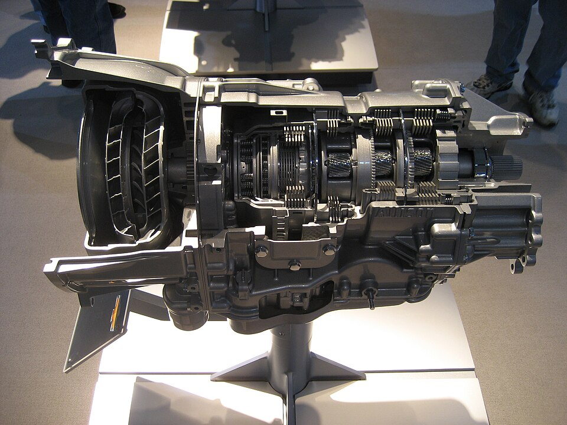
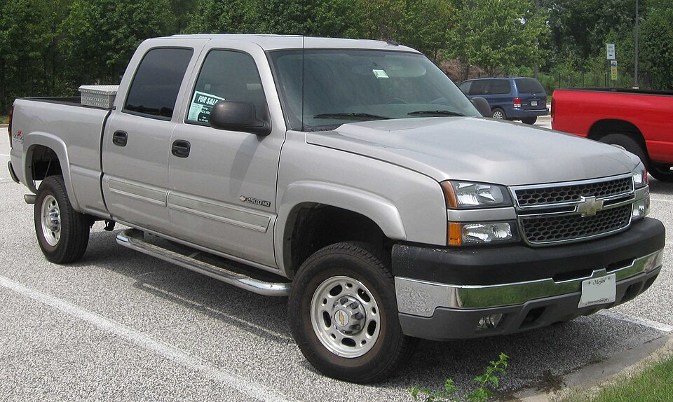
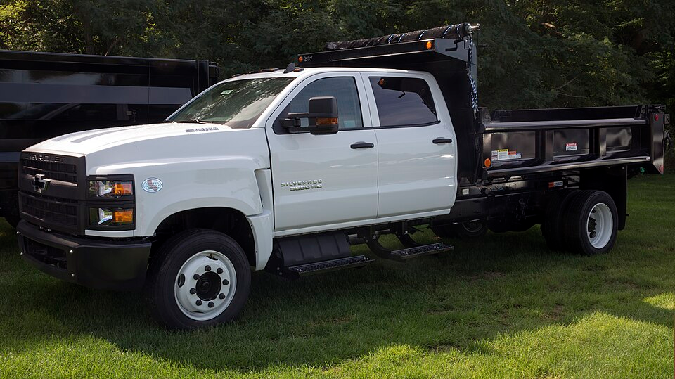

Este artigo mostra como montar no Engrenarium um modelo didático da transmissão Allison 1000 e como interpretar suas relações de marcha. O foco é organizar os três conjuntos planetários, aplicar os vínculos corretos e conferir as seis relações obtidas.
Contexto da transmissão
A transmissão automática Allison 1000, fabricada pela Allison Transmission, é associada a veículos rodoviários de maior porte, como caminhonetes, utilitários e veículos de serviço. O conjunto é interessante para estudo porque usa uma arquitetura planetária em série, em vez de tratar cada marcha como um par isolado de engrenagens.

Entre os veículos citados no material do projeto estão Chevrolet Silverado, Chevrolet Kodiak/GMC Topkick, GMC Sierra, Hummer H1 e Chevrolet B-Series.


Arquitetura no Engrenarium
O modelo usa três sistemas planetários consecutivos. O porta-planetas de um estágio é conectado permanentemente à anelar do estágio seguinte, exceto no último conjunto, em que o porta-planetas é conectado ao eixo de saída.
| Conexão permanente | Função na montagem |
|---|---|
| Porta-planetas 1 ligado à anelar 2 | Transmite o movimento do primeiro estágio para o segundo. |
| Porta-planetas 2 ligado à anelar 3 | Transmite o movimento do segundo estágio para o terceiro. |
| Porta-planetas 3 ligado à saída | Define a velocidade angular de saída do modelo. |
Com essa convenção, a relação geral é escrita como a razão entre a velocidade de entrada na primeira solar e a velocidade de saída no terceiro porta-planetas:
Dados para montagem no Engrenarium
Para a montagem, os três sistemas planetários usam os números de dentes abaixo. Esses dados fecham geometricamente cada conjunto pela relação \(N_{ring}=N_{sun}+2N_{planet}\).
| Conjunto | Solar | Planeta | Anelar interna |
|---|---|---|---|
| Planetária 1 | \(N_{sun}=61\) | \(N_{planet}=25\) | \(N_{ring}=111\) |
| Planetária 2 | \(N_{sun}=57\) | \(N_{planet}=27\) | \(N_{ring}=111\) |
| Planetária 3 | \(N_{sun}=49\) | \(N_{planet}=27\) | \(N_{ring}=103\) |
O primeiro passo no Engrenarium é criar os três conjuntos com esses dentes. Em seguida, faça as conexões permanentes entre porta-planetas e anelares e use a primeira solar como entrada do modelo.
Relações de marcha
O modelo trabalha com seis relações: cinco marchas à frente e uma marcha ré. Relações maiores que \(1\) indicam redução; a quarta marcha é direta; a quinta é overdrive; e o sinal negativo da ré indica inversão de sentido.
| Condição | Relação indicada |
|---|---|
| 1ª marcha | \(3,10\) |
| 2ª marcha | \(1,81\) |
| 3ª marcha | \(1,41\) |
| 4ª marcha | \(1,00\) |
| 5ª marcha | \(0,71\) |
| Marcha ré | \(-4,49\) |
Montagem das marchas
Depois da geometria, cada marcha é obtida por uma configuração de restrições. No Engrenarium, a forma prática é manter a montagem básica e ativar os travamentos ou acoplamentos abaixo para cada caso.
| Marcha | Relação | Vínculos a aplicar |
|---|---|---|
| 1ª | \(i_1=3,10\) | \(\omega_{sun\,1}=\omega_{sun\,2}\) e \(\omega_{ring\,3}=0\) |
| 2ª | \(i_2=1,81\) | \(\omega_{sun\,1}=\omega_{sun\,2}\) e \(\omega_{ring\,2}=0\) |
| 3ª | \(i_3=1,41\) | \(\omega_{sun\,1}=\omega_{sun\,2}\) e \(\omega_{ring\,1}=0\) |
| 4ª | \(i_4=1,00\) | \(\omega_{sun\,1}=\omega_{sun\,2}\) e \(\omega_{sun\,1}=\omega_{carrier\,2}\) |
| 5ª | \(i_5=0,71\) | \(\omega_{sun\,1}=\omega_{carrier\,2}\) e \(\omega_{ring\,1}=0\) |
| Ré | \(i_R=-4,49\) | \(\omega_{ring\,1}=0\) e \(\omega_{ring\,3}=0\) |
A primeira, segunda e terceira marchas são reduções sucessivamente menores. A quarta marcha trava o conjunto em uma condição direta, enquanto a quinta usa a combinação de acoplamento e travamento para produzir overdrive. Na ré, dois travamentos de anelares mudam o caminho cinemático e invertem o sentido da saída.
Leitura didática
A Allison 1000 é um bom exemplo para estudar transmissões automáticas porque mostra como várias relações podem surgir de uma mesma arquitetura planetária. O número de dentes define a geometria; as conexões permanentes definem a estrutura; e os vínculos de cada marcha definem o comportamento cinemático.
Ao conferir a montagem, siga esta ordem:
- crie as três planetárias com os dentes indicados;
- conecte o porta-planetas 1 à anelar 2 e o porta-planetas 2 à anelar 3;
- use a primeira solar como entrada e o terceiro porta-planetas como saída;
- aplique uma linha da tabela de vínculos para cada marcha;
- confira se a relação calculada corresponde ao valor esperado.